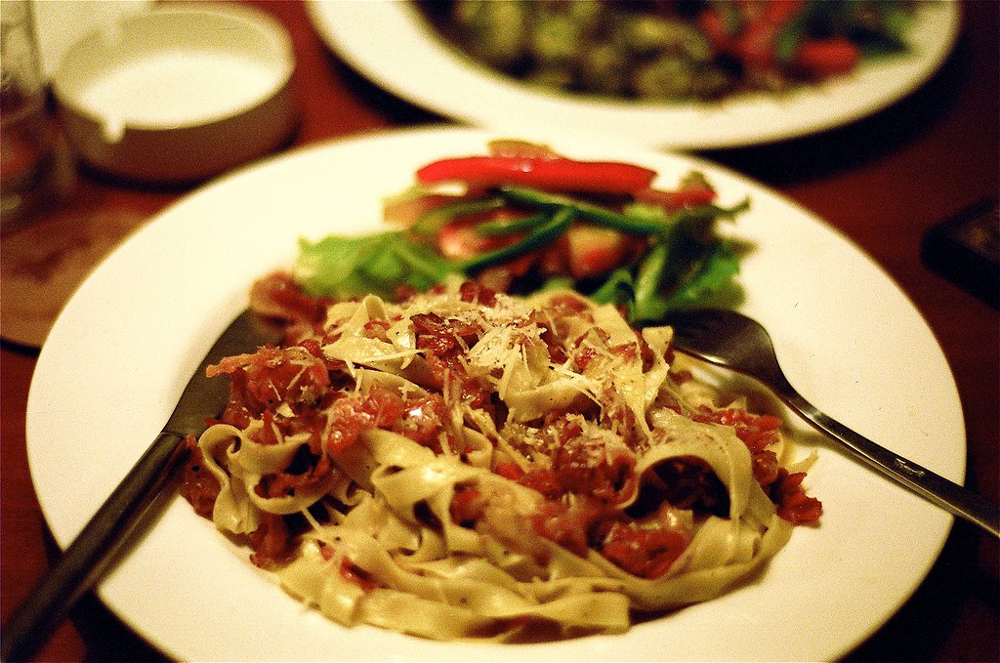

Fettuccine Carbonara

Description
Making fried rice is a breeze with the recipe you'll find below. The process is simple — preheat your pan before swirling in oil and aromatics, then add uncooked proteins if applicable. Add in rice and vegetables, vigorously tossing ingredients for that toasty, golden-brown color that signals big flavor.
Ingredients
- 2/3 cup chopped baby carrots
- 1/2 cup frozen green peas
- 2 tablespoons vegetable oil
- 1 clove garlic, minced, or to taste
- 2 Large eggs
- 3 cups leftover cooked and chilled white rice
- 1 tablespoon soy sauce, or more to taste
- 2 teaspoons sesame oil, or to taste
Directions
- Assemble ingredients.
- Place carrots in a small saucepan and cover with water. Bring to a low boil and cook for 3 to 5 minutes. Stir in peas, then immediately drain in a colander.
- Heat a wok over high heat. Pour in vegetable oil, then stir in carrots, peas, and garlic; cook for about 30 seconds. Add eggs; stir quickly to scramble eggs with vegetables.
- Stir in cooked rice. Add soy sauce and toss rice to coat. Drizzle with sesame oil and toss again.
- Serve hot and enjoy!